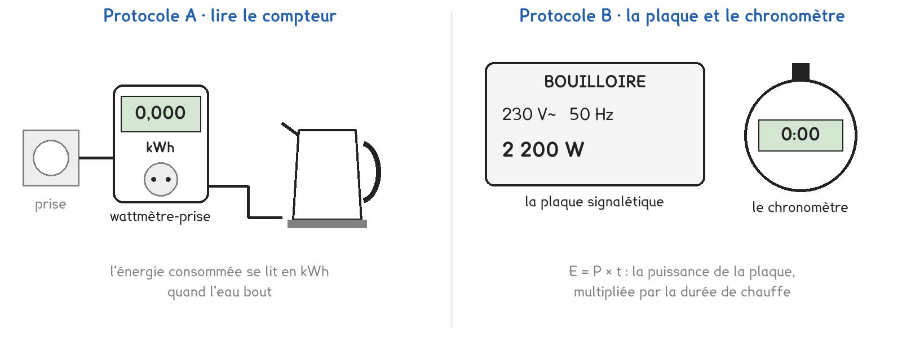
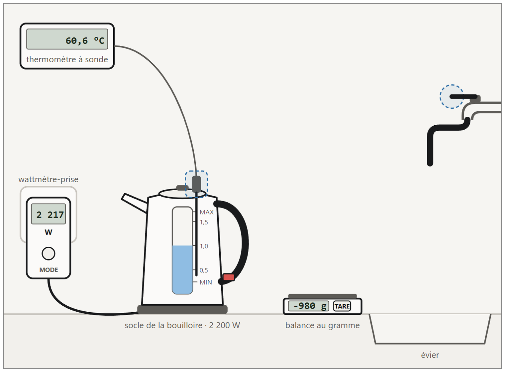

Tle Bac Pro · OBM · TP sur simulation SIM-17
Quel appareil fait bouillir un litre d'eau en gaspillant le moins d'énergie ?
2 figures
Sujet. Pour les pâtes du soir, il faut un litre d’eau bouillante. La bouilloire, la casserole sur la plaque en fonte, la casserole sur la plaque à induction : les trois y arrivent, mais pas avec la même facture.
Problématique : quel appareil fait bouillir un litre d’eau en gaspillant le moins d’énergie ?
La simulation. Ouvrir « Chauffer de l’eau » : le fichier bouilloire.html, sur l’ENT ou la clé du professeur, onglet « Le rendement ».

a) Relever la puissance de chaque appareil, écrite sur son bouton dans la simulation.
| Appareil | bouilloire | plaque en fonte | plaque à induction |
|---|---|---|---|
| Puissance (W) |
On rappelle que 1 kWh = 3 600 000 J.
b) Convertir. Le premier de chaque ligne est fait.
| 0,100 kWh = 360 000 J | 0,050 kWh = ………… J | 0,125 kWh = ………… J |
|---|---|---|
| 1 min 30 s = 90 s | 3 min 20 s = ………… s | 7 min 05 s = ………… s |
L’énergie reçue par l’eau vaut Q = m × c × (θfinale − θinitiale), avec c = 4 180 J/(kg·°C) ; un litre d’eau a une masse de 1 kg.
c) Calculer Q pour chauffer 1 L d’eau de 18 °C à 100 °C.
Q = ………… × ………… × ( ………… − ………… ) = ………… J
Le rendement compare l’énergie utile, reçue par l’eau, à l’énergie électrique consommée : η = Q ÷ E, en pourcentage.
Protocole A · lire le compteur. Le wattmètre-prise, branché entre la prise et l’appareil, compte l’énergie consommée depuis sa remise à zéro. On la lit en kWh quand l’eau bout.
Protocole B · la plaque et le chronomètre. On chronomètre la chauffe, puis on calcule E = P × t avec la puissance de la plaque signalétique.
d) Compléter le tableau pour comparer les deux protocoles.
| Protocole A | Protocole B | |
|---|---|---|
| Ce qu’on lit quand l’eau bout | …………………… | …………………… |
| L’unité de E avant conversion : entourer | kWh · J · s | kWh · J · s |
| Ce qui pourrait fausser E | …………………… | …………………… |
Le choix se fait maintenant ; le professeur peut imposer un protocole.
e) Quel protocole prenez-vous ? Justifier en une phrase.
Je prends le protocole ……… parce que ……………………………………………………………………
f) Avant de mesurer : classer les trois appareils par rendement.
1 : ……………………………… 2 : ……………………………… 3 : ………………………………
Avant de commencer. Ouvrir bouilloire.html, onglet « Le rendement ». Carte 1 : eau du robinet à 18 °C. Carte 3 : vitesse du temps « × 10 ».
g) Schématiser la chaîne : prise, wattmètre, appareil, eau. Flécher les énergies.
Flécher l’énergie électrique, l’énergie utile reçue par l’eau et les pertes.
Le schéma se dessine sur la feuille du TP.

h) Relever et calculer, pour les trois appareils.
| Bouilloire | Plaque en fonte | Plaque à induction | |
|---|---|---|---|
| m pesée (g) · θinitiale (°C) | |||
| A : compteur (kWh) · B : durée (s) | |||
| E consommée (J) | |||
| Température finale (°C) | |||
| Q reçue par l’eau (J) | |||
| η = Q ÷ E (%) |
i) Le classement de f est-il confirmé ? Où part l’énergie qui manque à l’eau ?
j) Comparer E avec un groupe de l’autre protocole. Pourquoi est-elle presque égale ?
k) Sur une vraie plaque en fonte, pourquoi P × t peut-il se tromper ?
l) Un litre par jour pendant un an : que gagne la bouilloire sur la plaque en fonte ?
Économie = ( ………… − ………… ) kWh × 365 = ………… kWh
Soit ………… € par an, à 0,20 € le kWh.
m) Répondre à la problématique en deux phrases.
Ce que ce TP a établi, et qui vaut pour tout appareil de chauffage :
À RETENIR
Le rendement d’un appareil de chauffage est le rapport de l’énergie utile, reçue par l’eau, à l’énergie électrique consommée : η = Q ÷ E. Il est toujours inférieur à 100 % : le reste chauffe l’appareil, la casserole et l’air.
Plus la chaleur naît près de l’eau, meilleur est le rendement : la bouilloire chauffe l’eau directement, l’induction chauffe le fond de la casserole, la plaque en fonte doit d’abord chauffer sa propre masse.
TP sur simulation de physique-chimie. Le travail se fait sur la feuille du TP : cette page en est la version à l'écran, sans les lignes à remplir. La simulation s'ouvre sans réseau et n'enregistre rien.